微信原生、Uni-app、Taro选谁？
对应短视频主题：微信原生、Uni-app、Taro 选谁？
更新于：2026-09-12
选技术栈不是给三个名字排座次。真正要回答的是：你要交付几个平台、团队已经会什么、哪些原生能力不能妥协，以及多端复用是否值得增加调试成本。
微信原生、Uni-app 与 Taro 的核心差异，可以先压缩成一句话：微信原生更贴近微信平台；Uni-app 以 Vue 的开发体验组织跨端工程；Taro 以 React/JSX 的开发体验组织跨端工程。它们都能做小程序，但解决的问题不同。
先看选择全景
{kind=link}
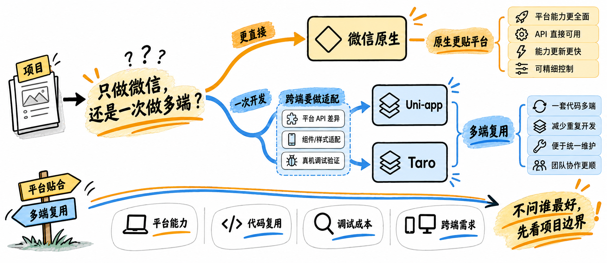
不要先问谁最好，先看目标平台、复用、原生依赖和调试成本。
建议把需求写成四个问题：
未来六个月是否只交付微信小程序？
团队的主力经验是原生小程序、Vue 还是 React？
是否依赖微信最新接口、复杂性能治理或精细分包？
跨端复用节省的工作量，是否大于适配和测试新增的工作量？
三种路线分别在做什么
{kind=link}
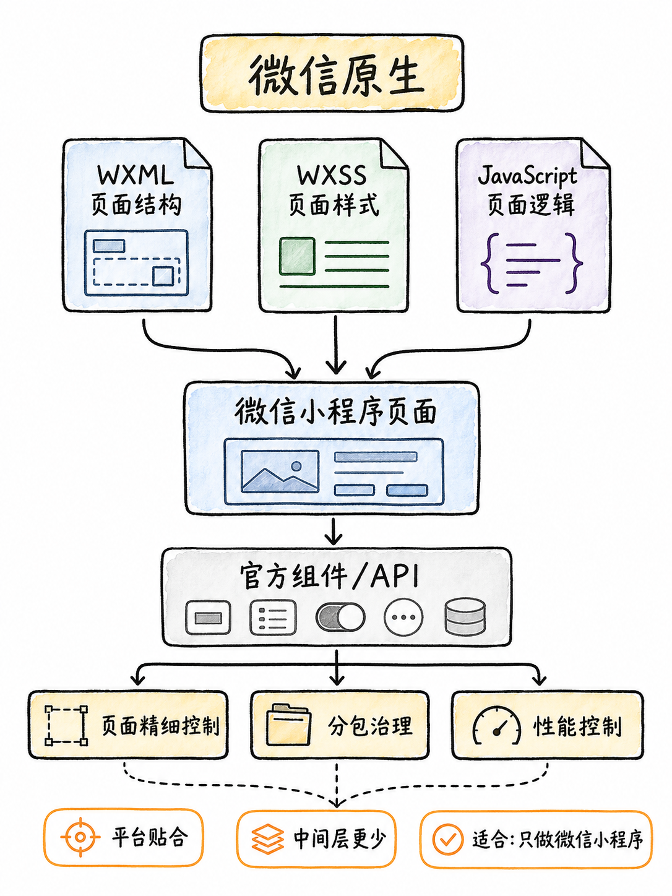
微信原生直接围绕小程序页面、组件和官方接口开发。
微信原生通常使用 WXML、WXSS、JavaScript/TypeScript 以及微信官方组件和 API。中间抽象层较少，排错路径更短；代价是将来扩展到其他平台时，迁移与重写比例可能更高。
{kind=link}
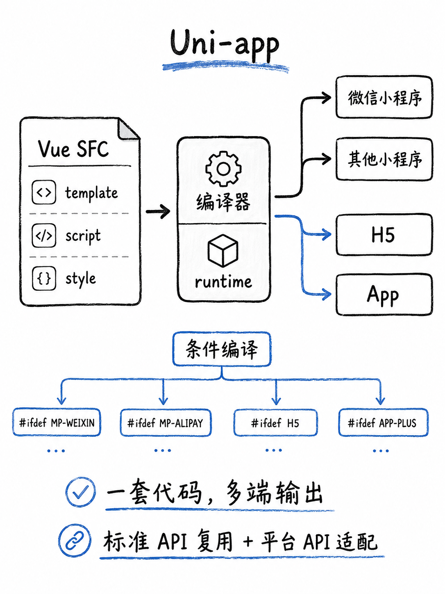
Uni-app 把 Vue 组件、编译器和运行时组合成多端工程。
Uni-app 适合已有 Vue 经验、且明确需要小程序、H5 或 App 等多端交付的团队。它能复用一部分组件和业务逻辑，但平台差异仍需要通过条件编译、平台 API 或专门组件处理。
{kind=link}
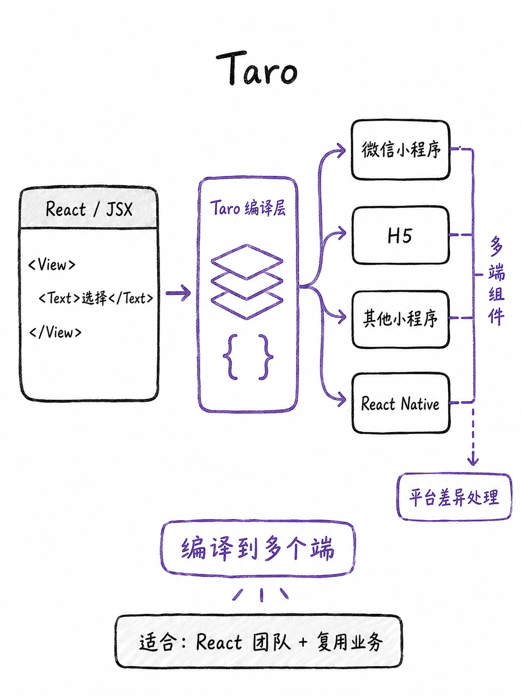
Taro 为 React/JSX 团队提供多端开发入口。
Taro 的判断逻辑类似：若团队以 React 为主，且多端复用的价值明确，React 组件与业务逻辑可以成为统一工程的基础；但仍必须接受编译链、运行时行为和不同宿主平台的验证工作。
用四个维度而不是印象做比较
{kind=link}
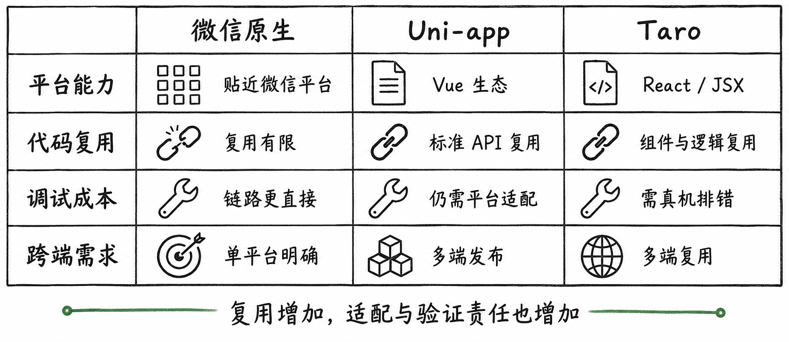
选型应比较平台覆盖、复用比例、调试链路和原生能力依赖。
维度 |
微信原生 |
Uni-app |
Taro |
|---|---|---|---|
平台目标 |
微信小程序优先 |
Vue 团队的多端交付 |
React 团队的多端交付 |
复用重点 |
微信平台内的页面与业务 |
Vue 组件、通用 API、业务逻辑 |
React 组件、JSX、业务逻辑 |
排错路径 |
更接近微信开发者工具与平台语义 |
需同时理解编译、运行时和各端差异 |
需同时理解编译产物、组件规范和各端差异 |
原生能力 |
直接调用、精细控制空间大 |
可调用，但常需平台适配 |
可调用，但常需平台适配 |
这张表不是性能排名。跨端方案并不必然更慢，原生方案也不必然更省总成本；真正的成本来自项目的平台数量、原生能力依赖、内容复杂度和团队经验。
复用有收益，也有边界
{kind=link}
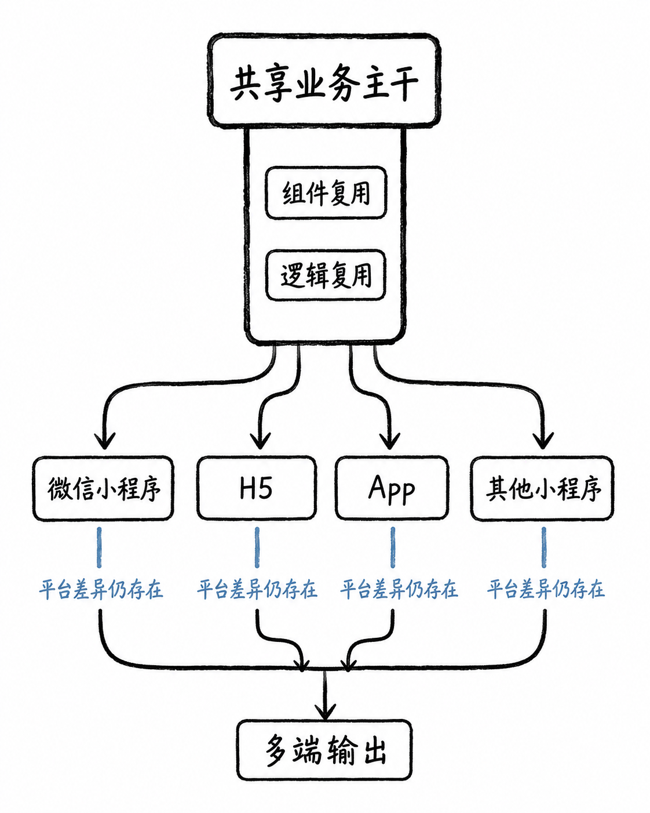
共享业务主干能减少重复，但平台分支不会自动消失。
也就是说，复用收益应该和适配工作一起计算，而不能只计算少写了多少页面。
{kind=link}
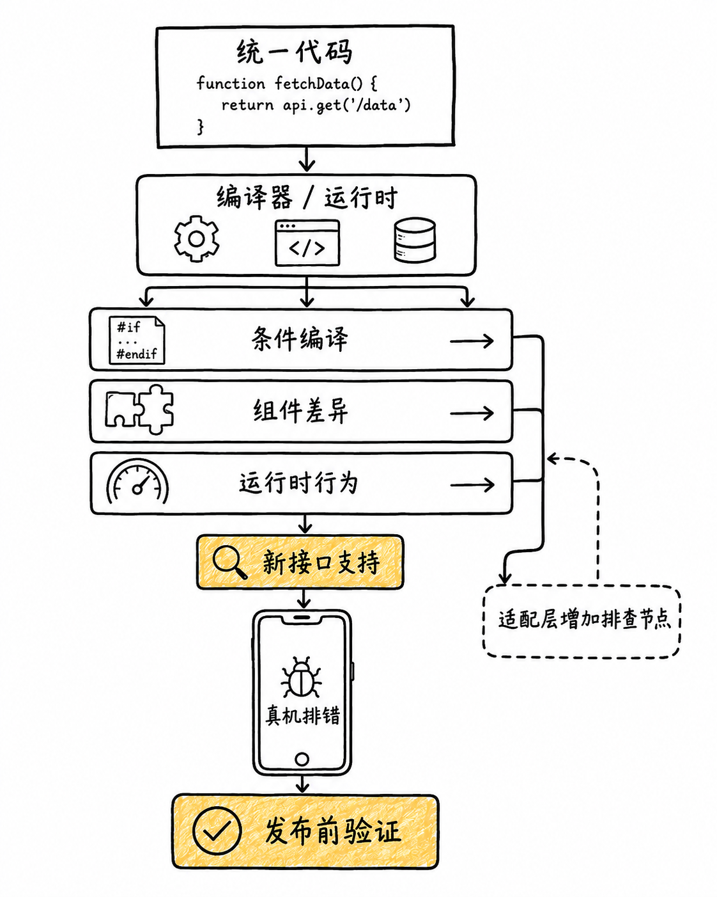
跨端工程必须预留条件编译、适配和真机验证的时间。
“一套代码多端运行”应理解为“尽可能共享”，而不是“完全没有差异”。当页面依赖某平台独有 API、手势行为、组件能力或审核规则时，仍要写平台分支并进行真机验证。把这些差异显式列入需求和测试计划，才不会在临近上线时变成返工。
原生能力、包体与性能必须真机验证
{kind=link}
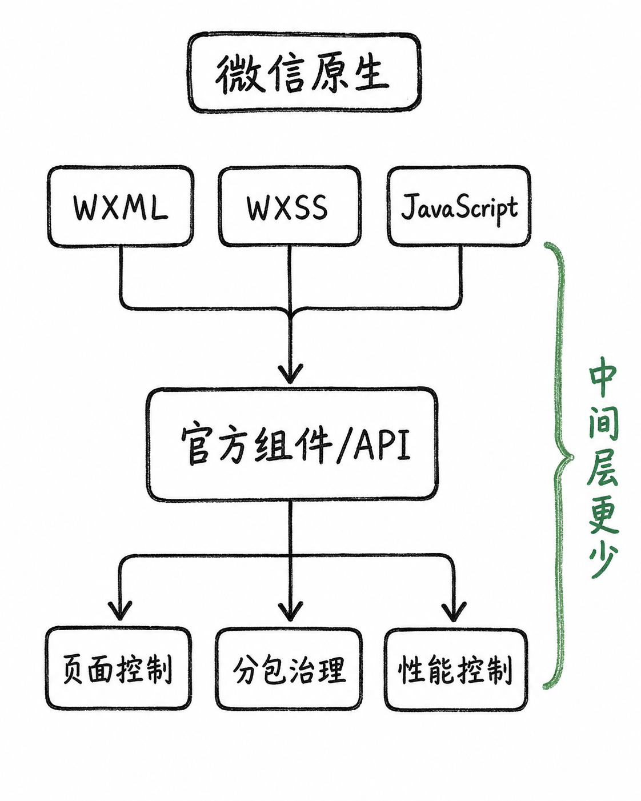
如果项目高度依赖微信原生能力，先评估原生路线。
不论选哪一条路线，包体和构建结果都应在真实目标端被验证，而不是只看本地代码结构。
{kind=link}
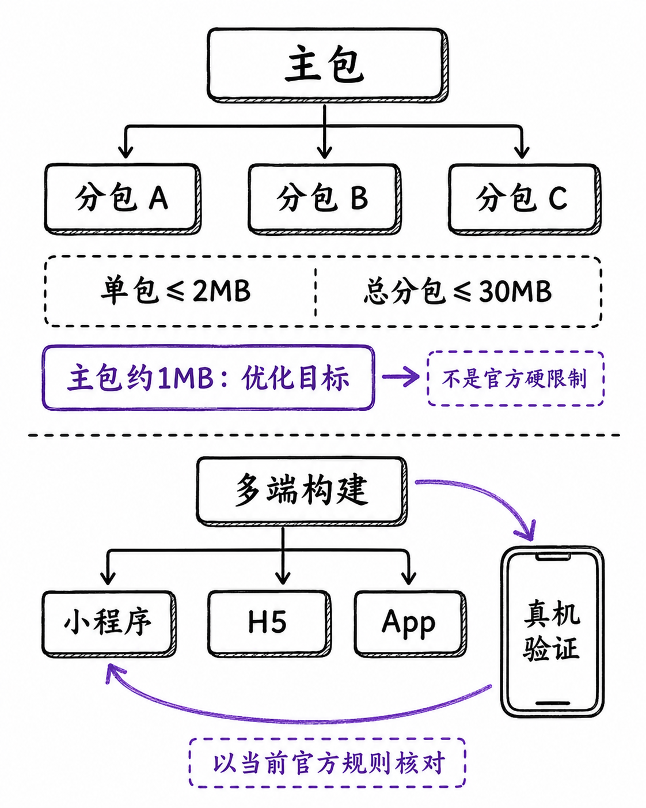
包体、构建结果和性能不能只看本地代码，必须在目标端验证。
无论选择哪一条路线，都应把分包、首屏、资源加载和关键交互放到真实设备检查。课程制作时采用的包体数字只是一项当时的项目口径；平台限制可能变化，发布前必须重新核对微信官方分包文档与开发者工具提示。
三种典型决策
{kind=link}
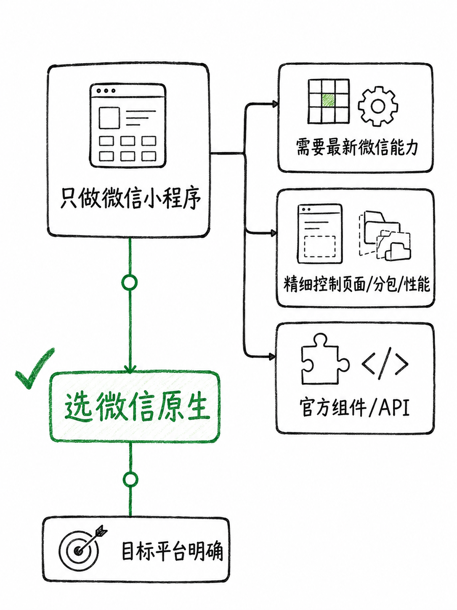
只做微信、重视最新能力与细粒度控制：优先评估微信原生。
当多端交付成为明确目标时，团队已有的技术栈会直接影响学习和维护成本。
{kind=link}
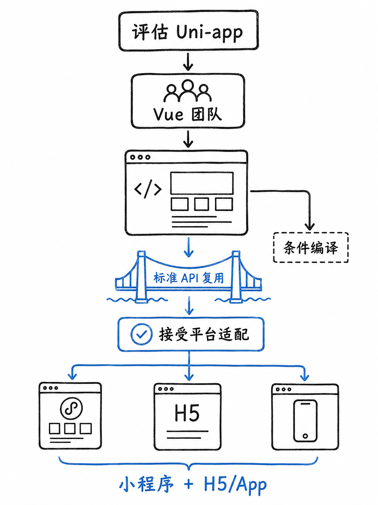
Vue 团队有明确多端目标：优先评估 Uni-app。
如果团队的主力是 React，则应重点验证 JSX 体验和跨端组件复用是否能覆盖真实业务。
{kind=link}
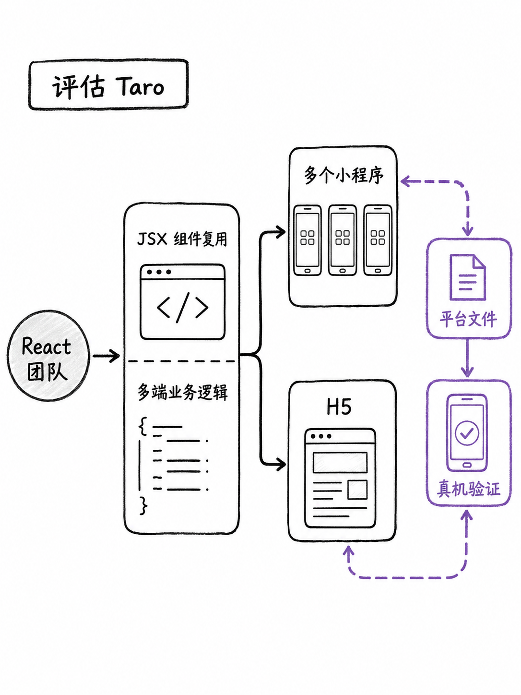
React 团队重视组件与业务复用：优先评估 Taro。
这里的“优先评估”不是自动结论。最稳妥的做法是为目标页面制作一个小型验证样例：包含一项关键原生接口、一个复杂组件、一条数据请求和一次真机测试。用这个样例验证后，再把选择扩展到整个项目。
最终决策顺序
{kind=link}
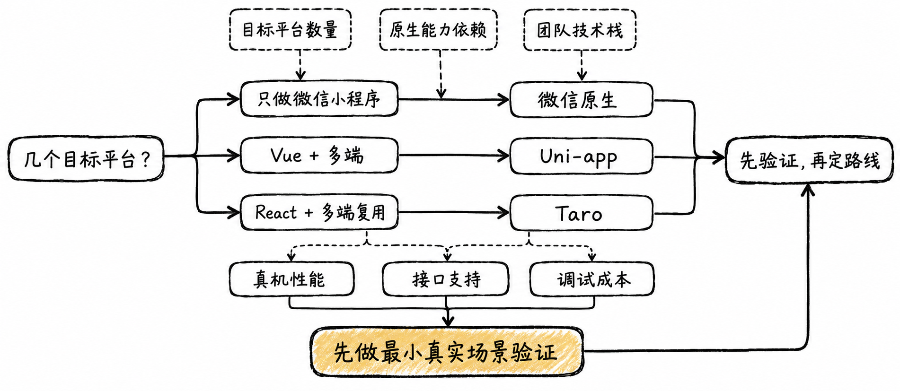
先确定平台与团队，再验证原生依赖、复用边界和真机表现。
可以按以下顺序决策：
只做微信小程序且依赖最新能力、精细页面或分包治理：从微信原生开始；
Vue 团队且有清晰多端交付目标：比较 Uni-app 的复用收益与适配成本；
React 团队且业务组件需要跨端复用：比较 Taro 的开发效率与目标端验证成本；
在真实设备和真实内容规模下验证，而不是凭框架宣传或他人项目结论决定。
参考与更新说明
本文的课程研究日期为 2026-09-08。框架能力与平台限制会迭代，实施前请以当前官方文档、开发者工具与项目真机测试结果为准。